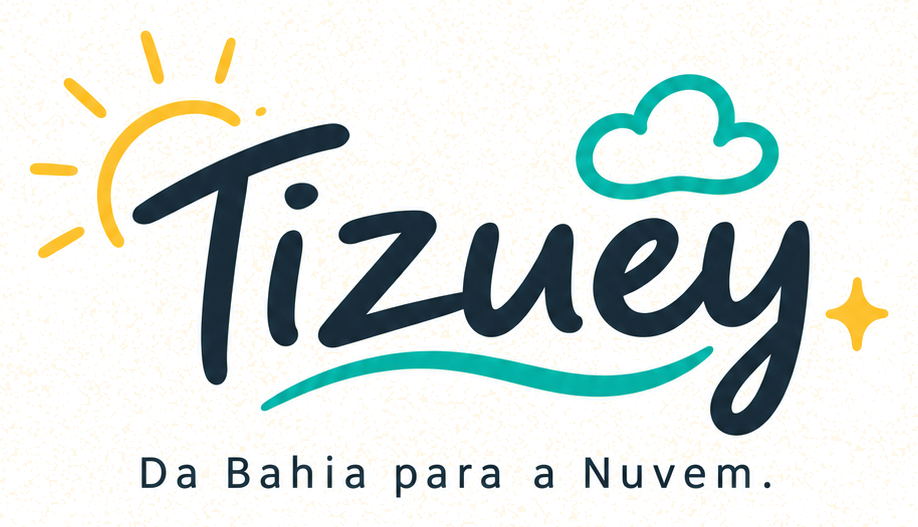

Tizuey, da Bahia para a Nuvem

Compartilhando meus estudos, projetos e descobertas em Cloud, DevOps, IA e Segurança.
Vamos nos conectar no LinkedIn (abre em nova aba)Para startups baianas
BTX 2026 está selecionando startups expositoras
Até 120 startups poderão ser selecionadas para expor no Bahia Tech Experience, de 5 a 7 de dezembro, no Centro de Convenções de Salvador.
Inscrições gratuitas até 31/10 às 18h, horário de Brasília
- 13/10
- Abertura das inscrições
- 13/11
- Divulgação das selecionadas
- 05 a 07/12
- Evento: BTX 2026
- CNPJ ativo e regular no estado da Bahia
- Startup em tração, com vendas em andamento, ou com produto ou solução finalizado e pronto para comercialização ou utilização
- Uma inscrição por CNPJ
- Duas pessoas da equipe presentes, de forma presencial, nos três dias do evento
Inscrições encerradas em 31/10, às 18h. Obrigada por acompanhar!
Dúvidas: startupba@ba.sebrae.com.br
Divulgação independente, feita por mim. A inscrição não garante a seleção; as informações oficiais estão no regulamento.
Agenda de eventos tech
Eventos que acho interessantes para a nossa comunidade. A lista é uma curadoria pessoal e não garante vagas ou inscrições abertas. Confira sempre a página oficial.
Top eventos
Seleção minha, sem vínculo com os organizadores.
-
07nov
-
05dez
-
05 a 07dez
Bahia Tech Experience (BTX)
Tecnologia e inovação
Página oficial do Bahia Tech Experience (abre em nova aba)
Outubro de 2026
-
13 a 16out
-
14out
III Workshop de Comunicação Quântica
Computação quântica
Página oficial do III Workshop de Comunicação Quântica (abre em nova aba) -
16out
Evidências Inteligentes: IA a Serviço da Justiça
Inteligência Artificial
Página oficial do evento Evidências Inteligentes (abre em nova aba) -
20out
Alterdata Experience Salvador
Tecnologia
Página oficial do Alterdata Experience Salvador (abre em nova aba)
Novembro de 2026
-
03 e 04nov
-
07nov
Nullbyte Security Conference
Segurança
Página oficial da Nullbyte Security Conference (abre em nova aba) -
09 a 13nov
-
12nov
-
13 a 15nov
-
24 a 27nov